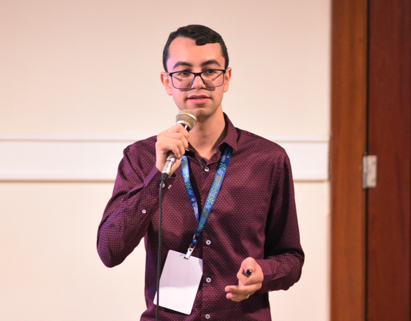

pedrofsn
Android Developer

Dados Pessoais
- Pedro Francisco de Sousa Neto
- Casado | 2 filhos |
Dados Acadêmico
Idiomas
- Português - Fluente
- Inglês - Intermediário
Experiência
Aplicativos Android, finalizados e publicados, desenvolvidos como freelancer.
Agenda Digital
Aplicativo white label para acompanhamento escolar.
- Imagens
- App default
- Centro Educacional Casinha Feliz
- RTG Especialização
- Colégio WRJ
- Escola Videira
fitstop
Rede virtual de academias de ginástica.
- Vídeo de lançamento em Boa visita
- Mais informações
- App
Emoticover
Aplicativo de e-commerce de capinhas/cases para smartphones.
- Mais informações
- App
SIIOS - Sistema Integrado Inteligente de Operações de Segurança
Aplicativo de segurança para gerenciamento de funcionários terceirizados.
- Mais informações
- App
ClickVale
Fintech que veio para desburocratizar o adiantamento salarial na relação entre colaborador e empregador. Aplicativo recheado de features de app banking.
- Mais informações
- Imagens
- App
Meu Doutor 24 horas
Aplicativo que permite o agendamento e controle de consultas médicas. Para o médico, possibilita promover o trabalho dos médicos e ampliar sua carteira de pacientes. Para o paciente, permite a busca de médicos por localização, especialidades, atendimento de urgência etc e pagamento de consultas particulares.
- Mais informações
- Imagens
- App do Paciente
- App do Médico
Rede Completta
Aplicativo de descontos com ênfase em postos de combustíveis e lojas de conveniência, baseado no conceito de marketing de rede / venda direta / Marketing Multinível (MMN).
- Mais informações
- App
Jornada do Agricultor
Aplicativo offline first que permite aos agricultores coletarem e acompanharem a evolução de colheitas e o manejo de pragas em fazendas.
- App
Solução Consultoria
Aplicativo para assessoria em projetos e convênios, cadastramento, execução, prestação de contas e capacitação.
- App
Pesquisa OD
Aplicativo offline first para realização de pesquisas em pontos de pedágio.
- App
Car4Sale
Aplicativo para compra e venda de veículos.
- Na mídia
- Mais informações
- Imagens
- App
Aser RMS
Port mobile as principais funções do sistema Aser RMS.
- App
Heey
O Heey localiza quem está próximo a você através da geolocalização ou pela internet. Através do @nomedeusuario, você adiciona seu Contato uma única vez e vice-versa. Substituindo a troca de cartão de visitas, você divulga seus dados, informando o que
desejar. App de rede social.
- Imagens
- App
CBM Studant
Aplicativo white label de carteirinha virtual. Com backend desenvolvido em PHP com a utilização do framework Laravel.
- App default
- FJJMA
- FJJ MARANHAO
- FJJE-MT
- FJJP
- FJJSE
- FMAJJ
TOP Clean Lavanderia
Ferramenta interna para controle de insumos, produtividade e gestão de atividades da lavanderia TOP Clean.
- App
Projetos manutenidos como freelancer.
aLavadeira.com
Aplicativo interno para gerenciamento e acompanhamento de rotas e serviços dos motoristas/coletores da lavanderia aLavadeira.com.
Biotreino
Aplicativo de treinos e orientações de um Personal Trainer por vídeo.
- Mais informações
- App
CBM Martial Arts
Aplicativo para gestão empresarial e acadêmica de escolas de artes marcias.
- App
CBM Manager
Aplicativo interno de back office para o sistema CBM.
Pesquisa Colaborativa
Sistema de promotores de venda, utilizado em uma empresa centenária do ramo de lácteos, Queijos Regina. Atuação no desenvolvimento de novas funcionalidades e manutenções no sistema web (php) e app android.
- App
Concebra PRO
Aplicativo interno para acompanhamento de pedidos e gastos.
Jopy
Aplicativo/produto offline first da Gwaya Sistemas para otimizar o trabalho no dia a dia com o processo de compras. Por ele é possível aprovar ou rejeitar pedidos a partir de um dispositivo mobile. A atualização dos pedidos
é sincronizada com ERP Protheus possibilitando o trabalho de maneira remota.
SafetyCar
Aplicativo para manutenção veicular.
- App
Spinnable
Biblioteca android pra facilitar o trabalho com a manipulação de dados e controle relacionados ao componente 'Spinner'.
- Código-fonte
EasyMask
Métodos de Kotlin Extension Functions para facilitar o trabalho com máscaras no android e encapsulamento da biblioteca 'Canarinho' da Concrete Soluções.
- Código-fonte
EasyValidation
Biblioteca para facilitar a validação de campos no android.
- Código-fonte
EasyRetrofit
Biblioteca android que engloba códigos comuns quando se trabalha com o Retrofit e Logging Interceptor. Contém classes para facilitar o tratamento de exceções http e é completamente desacoplada do factory de serialização/deserialização
e adapters referente aos retornos.
- Código-fonte
EasyGlide
Encapsulamento da biblioteca de carregamento assíncrono de imagens 'Glide' do Facebook para facilitar a implementação e uso através de Kotlin Extension Functions adicionadas ao projeto.
- Código-fonte
EasyHawk
Encapsulamento da biblioteca de criptografia 'Hawk' para facilitar a implementação e uso através de Kotlin Extension Functions adicionadas ao projeto.
- Código-fonte
RevealPassword
Biblioteca android para facilitar o trabalho campo de senha que contém um botão para exibir/ocultar a senha. Oferece os métodos para que seja trabalhado em views customizadas, além da oferecida pela biblioteca.
- Código-fonte
base-code
Biblioteca base para projetos android, contém códigos referente a roteamento de telas, arquitetura MVVM etc.
- Código-fonte
data-form
Biblioteca android para facilitar a construção e coleta de dados de formulários dinâmicos, gerados a partir de JSON.
- Código-fonte
kotlin-genetic-algorithm
Implementação de um algoritmo genético para resolver o 'problema da mochila'.
- Código-fonte
ELiS Mobile
Aplicativo Android com funcionalidade de tradução de palavras através da entrada de termos em português ou em ELiS. Este foi o meu trabalho de conclusão de curso no bacharelado em Sistemas de Informação pela Universidade Federal de Goiás, que resultou em um artigo publicado nos Anais da V Escola Regional de Informática de Mato Grosso - Barra do Garças/MT.
- Código-fonte
- Paper
android-CloneNubank
Implementação 'clone' da tela de faturas da primeira versão do aplicativo do Nubank.
- Código-fonte
Agite Para Sortear
Aplicativo que realiza sorteio de um número dentro de um intervalo definido pelo usuário, ao chacoalhar o aparelho.
- Código-fonte
- App
android-MeusItens
Implementação de um app android para exploração de CRUD usando Realm Database.
- Código-fonte
Tudo Sobre Alistamento Militar
Aplicativo com informações básicas sobre o alistamento militar brasileiro.
- Código-fonte
- App
Color Picker
Aplicativo android para coleta de cor hexadecimal.
- Código-fonte
Códigos SWIFT
App que lista os códigos SWIFT dos principais bancos do mundo. Útil para quem precisa receber pagamentos internacionais. Estes códigos são necessários, por exemplo, para configurar o recebimento de pagamentos do AdMob, Adsense, PayPal etc.
- Código-fonte
CMC7 Cheque Falso
Aplicativo que constata se um cheque é falso ou não, com base no cálculo do CMC7 do cheque.
- Código-fonte
android-mvvm
Breve implementação de um projeto android em MVVM trabalhando com Kotlin, Data binding e Room Database.
- Código-fonte